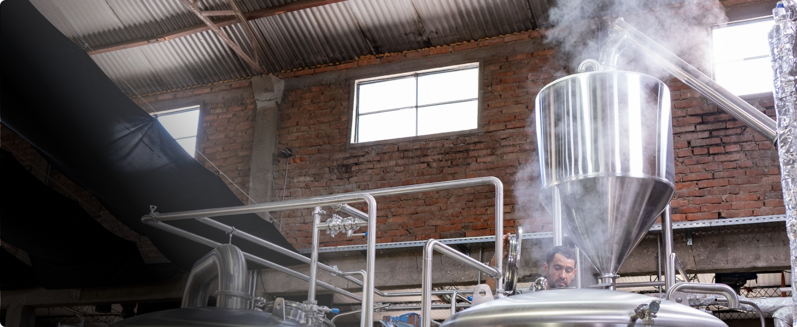
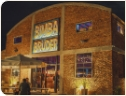
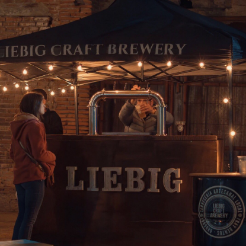
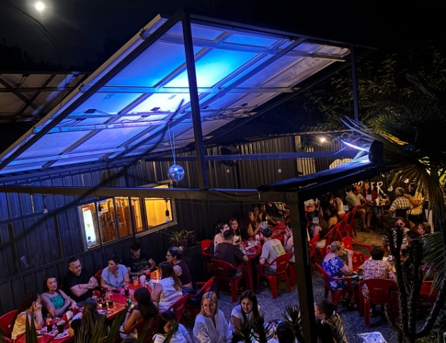
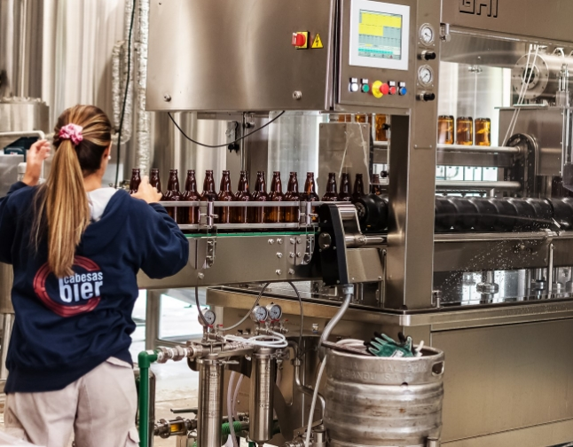

Listado de cervecerías
-

›Bimba Brüder
Ciudad de Paysandú, Paysandú
Cervecería artesanal y bar. Pasión, amigos y buena cerveza.
Visitas Degustaciones Bar -

›Liebig Craft Brewery
Fray Bentos, Río Negro
Liebig Craft Brewery | Cerveceria artesanal
Visitas Bar -

›Jack Beer
Ciudad de Paysandú, Paysandú
Cervecería artesanal y patio cervecero. 8 variedades.
Degustaciones Bar -
›
Cabesas BIER
Ciudad de Tacuarembó, Tacuarembó
Cervezas que inspiran para que ese sueño que está en tu cabeza, ¡se haga realidad!
Visitas Degustaciones -

›Bimba Brüder
Ciudad de Paysandú, Paysandú
Cervecería artesanal y bar. Pasión, amigos y buena cerveza.
Bar
Mostrando 5 de 20
Siguiente →